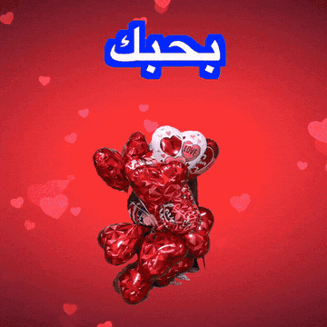
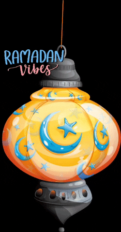
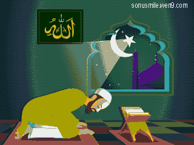
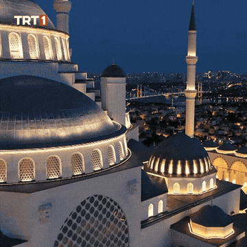

بِسْمِ ٱللَّٰهِ ٱلرَّحْمَٰنِ ٱلرَّحِيمِ
Ayat-ayat Cinta
Ketuk gerbang masjid 3 kali untuk membuka kisah ini 🌙
“Setiap kisah indah dimulai dengan nama-Nya. Semoga cinta ini juga dimulai dengan doa — bukan sekadar nafsu.”
Gerbang 0/3
ٱلْعِلْمُ فِي ٱلسَّمَاءِ
Al-Azhar, Kairo
Ketuk 5 bintang ilmu yang melayang di langit perpustakaan ✨
“Di antara jutaan buku di Al-Azhar, halaman yang paling ingin aku selesaikan adalah bab kehidupan bersamamu, habibi.”
Bintang 0/5
ٱلْقَدَرُ لِلَّٰهِ
Kereta Kairo
Geser rel kereta hingga jendela bertemu jendela 🚃
“Di kereta yang penuh orang asing, satu tatapanmu membuat kota seluas Kairo terasa seperti rumah, roohi.”
Jarak 0%
ٱلْكَلِمَٱتُ تَكْتُبُ ٱلْقُلُوب
Surat Rahasia
Ketuk segel lilin untuk membuka gulungan surat 🕯️
“Ada cinta yang lebih baik dititipkan pada selembar kertas — agar ia tak menyakiti siapa pun, termasuk dirinya sendiri.”
Segel utuh
ٱلسِّرُّ فِي ٱلدِّيَارِ
Diary Maria
Gosok halaman diary untuk mengungkap kalimat rahasia 🖊️
“Wahai Fahri… aku mencintaimu.” — rahasia yang hanya tersimpan di diary
“Aku menulis namamu setiap malam di diary ini — bukan berharap kau membacanya, tapi berharap suatu hari aku berani mengucapkannya.”
Terkunci 0%
ٱلْحَقُّ أَفْضَل
Tiga Permata
Pilih satu permata kejujuran untuk Nurul 💎
“Perempuan sejati tak menuntut jawaban manis. Ia hanya ingin kejujuran yang tak membuatnya menangis diam-diam.”
Pilih 1 permata
ٱلْحِفْظُ صَلَاة
Perisai Noura
Tahan perisai selama 3 detik menahan hujan nada 🛡️
“Menjadi lelaki yang melindungi bukan berarti tak takut — tapi memilih tetap berdiri, meski tangannya gemetar.”
Tahan 0.0/3.0s
ٱلْمِيثَاقُ بَيْنَنَا
Cincin Emas
Satukan dua bagian cincin hingga bersinar penuh 💍

“Jika cintaku harus dipilihkan warna, aku pilih emas — karena ia tak pernah pudar, insya Allah.”
Cincin 0%
ٱلْحَمْدُ لِلَّٰهِ
Akad Nikah
Tahan tombol “Qabiltu” 2 detik untuk menyempurnakan ijab qabul 🕊️

“Dan saat kau mengucapkan ‘qabiltu’, seluruh langit Kairo seolah tersenyum… ya Allah, semoga ini cinta yang Engkau ridhai.”
Belum diikat
ٱلصَّبْرُ مُنَاجَة
Ujian & Fitnah
Ketuk 6 titik cahaya di balik bilah penjara untuk menemukan jalan 🌟
“Fitnah memenjarakan tubuh, tapi tak pernah bisa memenjarakan hati yang bersih. Aku tenang — sebab kebenaran punya waktu sendiri.”
Cahaya 0/6
ٱلدُّعَاءُ رَحْمَة
Doa untuk Maria
Tahan tombol doa 4 detik — biar cahaya naik untuknya 🤲

“Aku tak punya keajaiban untuk membangunkanmu… hanya doa yang tak pernah berhenti, setiap sujud, untuk kesembuhanmu.”
Doa 0.0/4.0s
لَآ إِلَٰهَ إِلَّا ٱللَّٰهُ
Cahaya Syahadat
Nyalakan 4 lentera hingga ruangan bercahaya penuh ✨
“Cahaya paling indah bukan dari lentera emas… melainkan cahaya iman yang menyala di hati — lailahaillallah.”
Lentera 0/4
إِلَىٰ حَبِيبَتِي
Surat untukmu
Sebuah surat terbuka perlahan… baca sampai habis 💌
Ketuk untuk membuka surat 💌
▌“Aku bukan Fahri yang sempurna. Aku hanya manusia biasa yang jatuh cinta pada cara kamu berdoa — dan pada diam kamu yang penuh makna, habibi.”
Ketuk surat untuk membuka 💌
ٱلْحَبُّ فِي ٱللَّٰهِ
Ayat Cinta Abadi
Kisahnya selesai dibaca… tapi doanya tak pernah berakhir 🤲
حَبِيبِي… رُوحِي… قَلْبِي
“Cinta yang tumbuh di atas iman tak akan pernah mati — ia hanya berpindah rumah, dari hati menuju surga.”
— habibi & roohi, selamanya
اللَّهُمَّ اجْعَلْ حُبَّنَا فِي مِيزَانِ حَسَنَاتِنَا
— terinspirasi kisah Ayat-ayat Cinta, Habiburrahman El Shirazy
Terima kasih sudah menemani sampai akhir 🌙
